1
Dosez
Chez vous, versez vos doses de lait en poudre dans le biberon replié. Capuchon vissé, il est hermétique : jusqu’à huit doses y attendent, à l’abri de l’air et de l’humidité.
Fabriqué en France · Testé par le LNE
L’ancien monde
Ils sont beaux. Le grand biberon, la boîte doseuse à étages, le sac assorti : des objets bien faits, choisis avec soin. À la maison, ils ne posent aucun problème.
C’est dehors qu’ils se paient. Trois objets à sortir pour un seul repas, debout, sans table, un bébé dans les bras.
Lourds · Encombrants · Boîte doseuse séparée · Plusieurs pièces à transporter · Plus de gestes au moment du repas
BIBEON ne s’ajoute pas à cette liste. Il la remplace.

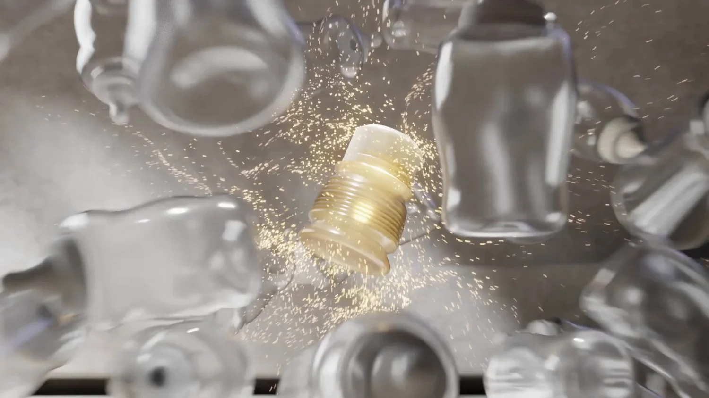
On n’a pas amélioré le biberon.
On a supprimé tout le reste.
« Quinze jours après la naissance de ma fille, BIBEON a commencé à germer. Plus tard, quand elle a eu six mois, je ne sortais plus. Faire les grands magasins avec six grands biberons vides dans la poussette, en plus des couches — non.
BIBEON est né de cette perte de liberté. »
Petit. Léger. Pré-dosé par vous.
Une balade, des courses, la salle d’attente du pédiatre. Le week-end chez des amis, la chambre d’hôtel, et jusqu’à l’avion.
Avant : un biberon rigide, une boîte doseuse, un sac à langer — pour un aller-retour au parc.
Maintenant : trois repas déjà dosés, dans un sac à main. Il ne reste que l’eau, et on en trouve partout.
Avant, c’était le sac à langer.
Maintenant, c’est le sac à main.
Essayez le geste
Trente millilitres d’eau pour un médicament. Quatre-vingt-dix pour un petit appétit. Deux cent quarante pour un grand. Trois cents pour un potage. Vous ne choisissez plus entre un biberon de 150, un de 260 et un de 330 : vous donnez à celui-ci la taille dont vous avez besoin, au moment où vous en avez besoin.
Faites glisser le curseur : le biberon se déplie, et le volume s’affiche.
Chaque soufflet reste où on le laisse. Il faut une vraie pression pour le déplier ou le replier : c’est un effort demandé au parent, et il est voulu. Le biberon ne peut pas se refermer inopinément — ni dans le sac, ni pendant la tétée.
150 ml
4 soufflets dépliés
Un biberon pour tous les appétits.
Et pour tout ce qu’on y met.
Trois gestes. Et rien de plus.
Chez vous, versez vos doses de lait en poudre dans le biberon replié. Capuchon vissé, il est hermétique : jusqu’à huit doses y attendent, à l’abri de l’air et de l’humidité.

Au moment du repas, desserrez d’abord la bague de quelques tours sans retirer le bloc, puis dépliez le corps en totalité, quel que soit le volume à préparer.

Ajoutez l’eau, secouez, c’est prêt. Le relief des soufflets brise les grumeaux : aucun accessoire.
Le dosage se fait chez vous.
Dehors, il ne reste que l’eau.
Bonus · l’anti-air
Le lait descend, l’air prend sa place. Ici, on abaisse les soufflets vides.
Au cours de la tétée, quand le niveau baisse, on abaisse les soufflets vides jusqu’au niveau du lait restant. Moins d’air dans le biberon, c’est moins d’air avalé inutilement. Et en fin de tétée, couder le biberon remplit la tétine de lait.

Une minute, tout est dit
Le dépliage, le dosage, l’eau, les soufflets qu’on abaisse à mesure que le lait descend. Puis le nettoyage et le séchage.
Il n’a pas été conçu pour remplacer votre biberon du quotidien. Chez vous, gardez vos biberons. Dehors, c’est son territoire.
Le biberon à contre-courant. Difficile à nettoyer ? C’est l’inverse : il se déplie pour donner accès au fond et à tous les recoins — un geste impossible avec un flacon rigide.
Conçu pour le lait de bébé
Les matériaux qui composent BIBEON ont été choisis pour leur aptitude au contact alimentaire. Le corps est en polypropylène, la tétine en silicone alimentaire — et non en silicone médical, et la bague ainsi que le capuchon sont en matière d’origine végétale.
Le Laboratoire national de métrologie et d’essais (LNE) a testé les cinq coloris du corps de BIBEON — la partie qui contient directement le lait. Nous n’avons pas fait tester un seul coloris pour extrapoler aux autres : les cinq ont été inclus dans les essais. La bague et le capuchon ont également été testés : ils ne contiennent pas le lait, mais ils sont en contact étroit et répété avec la tétine, la bague la maintenant en place et le capuchon la protégeant. Plusieurs simulants alimentaires ont été utilisés afin de couvrir notamment les milieux acides, aqueux/laitiers et gras. Tous les résultats de migration globale sont inférieurs à 6 mg/kg, seuil analytique indiqué dans le rapport. La tétine en silicone alimentaire — et non en silicone médical — relève de sa propre documentation de conformité.
Les faits
« Un biberon n’est pas un jouet. En l’absence d’AMM — d’autorisation de mise sur le marché — la conformité repose sur la responsabilité du fabricant, sa déclaration et les preuves qui l’étayent. J’ai voulu aller au bout de cette responsabilité : tout faire pour rassurer les parents et m’assurer que chaque choix pour BIBEON réponde à ce que nos bébés sont en droit d’attendre de nous. Parce qu’un biberon n’est pas un jouet : il contient ce qu’ils vont ingérer. »
La bague et le capuchon sont en matière d’origine végétale et représentent environ la moitié du poids du biberon : 12 grammes sur 23.
Ni organisme génétiquement modifié, ni gluten — selon l’attestation du fournisseur.
Par le Laboratoire national de métrologie et d’essais — dossier P143418.
0 résidu détecté. Tous les résultats des essais de migration globale sont inférieurs au seuil de détection de 6 mg/kg dans les simulants alimentaires utilisés.
Le flacon est en polypropylène, une matière qui n’en contient pas. Et il se plie sans le moindre assouplissant ajouté.
Gradué jusqu’à 300 ml par paliers de 30 — un soufflet, une graduation.
La tétine BIBEON est en silicone alimentaire — et non en silicone médical. C’est l’aptitude au contact alimentaire qui correspond à l’usage d’une tétine de biberon.
Conçu et fabriqué en région lyonnaise, du moule au flacon.
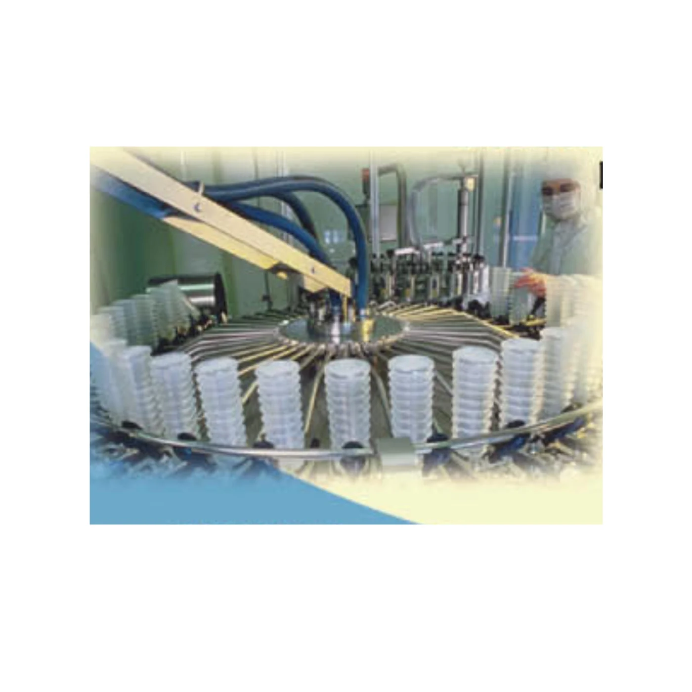
Notre histoire
Tout commence en 1996. Le corps à soufflets est breveté en 1999. Entre 2002 et 2004, il sort de nos machines à un million d’exemplaires par mois, vendus par deux enseignes nationales — en version à usage unique.
Puis il s’arrête. Pas faute d’acheteurs : à cause d’une affaire de sécurité sanitaire que nous avons nous-mêmes portée sur la place publique.
Vingt ans plus tard, les moules sont toujours là. Le flacon, lui, a changé : il fallait qu’il supporte des centaines de dépliages sans que la matière ne fatigue ni que la graduation ne dérive.
Lire l’histoire de BIBEONLe premier ne servait qu’une fois.
Celui-ci en supporte des centaines.
Une couleur par lieu de vie
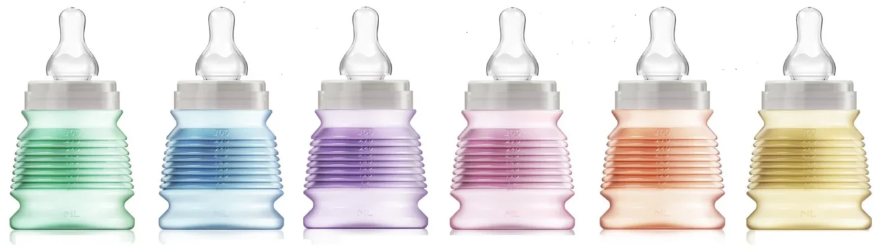
Pour ne jamais tomber en panne de biberon : un chez Mamie, un chez la nounou, un à la crèche, un dans la voiture, un dans le sac à main.
Chacun attend déjà dosé. Sur le capuchon plat, une étiquette : le prénom de l’enfant, le niveau à atteindre. La personne qui le garde n’a rien à mesurer.
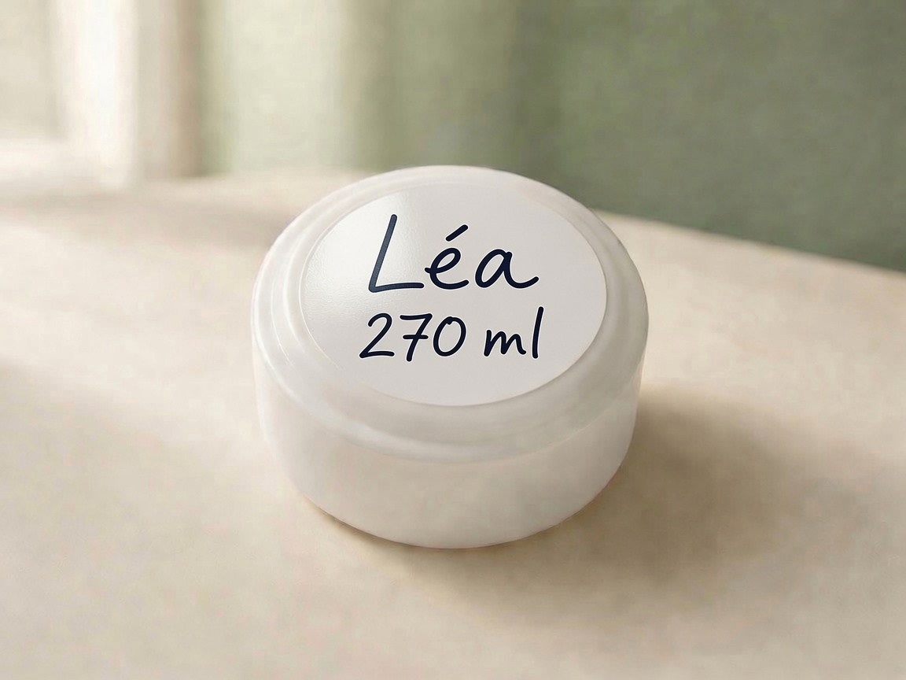
Une couleur par lieu.
Un prénom sur le capuchon.
Pourquoi ce prix
Vingt-trois grammes, le poids d’une lettre : on pourrait croire que le prix dépend de la quantité de plastique. Ce n’est pas elle qui coûte.
L’essentiel est ailleurs : recherche et développement, prototypes, protection des modèles et des brevets, veille technologique, outillages, choix des fournisseurs et fabrication dans les règles de conformité.
R&D et prototypes · Modèles et brevets · Veille technologique · Conformité et contrôles
Un exemple de cette exigence : nous avons fait tester par le LNE les cinq coloris du corps de BIBEON, la partie qui contient directement le lait, mais aussi la bague et le capuchon, en contact étroit avec la tétine. Les essais ont couvert plusieurs simulants alimentaires, notamment acides, aqueux/laitiers et gras. Vous n’achetez pas beaucoup de matière. Vous achetez beaucoup de conception, de contrôle et d’exigence dans très peu de matière.
Pourquoi vingt-trois grammes ont coûté si cher
« Je n’ai eu aucun complexe à concevoir un biberon à contre-courant.
On ne peut pas emporter la maison chaque fois qu’on franchit la porte. »
Port compris · Expédié le jour même
Commande passée avant midi, expédiée le jour même — depuis la France. Paiement par carte ou PayPal, retour sous 14 jours. Pour un lot particulier ou une commande en volume, appelez-nous.
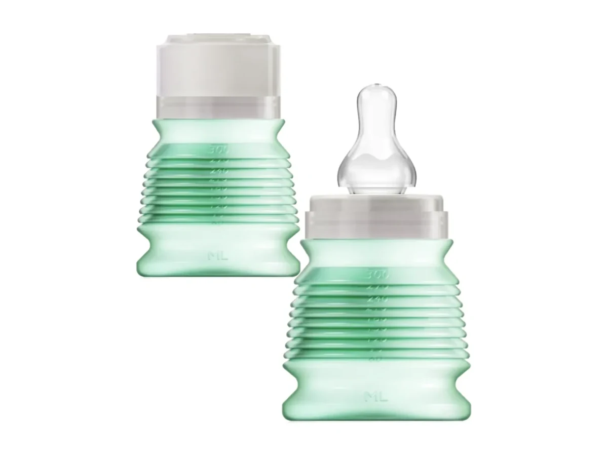
Le biberon nomade, préparé par vous. Avec sa tétine en silicone alimentaire, débit 6 mois. Vendu vide.
Coloris Vert
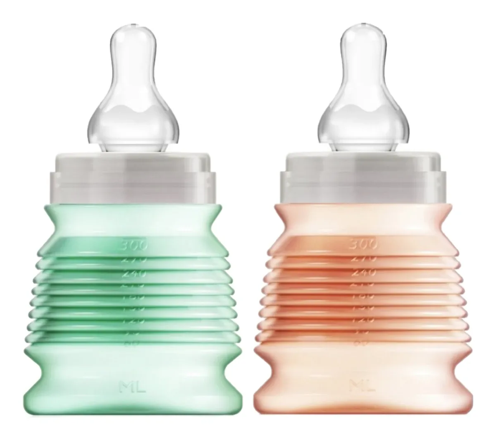
Deux biberons : celui de la sortie, et celui qui reste prêt dans le sac.
Choisissez 2 coloris parmi les 3 aucun choisi
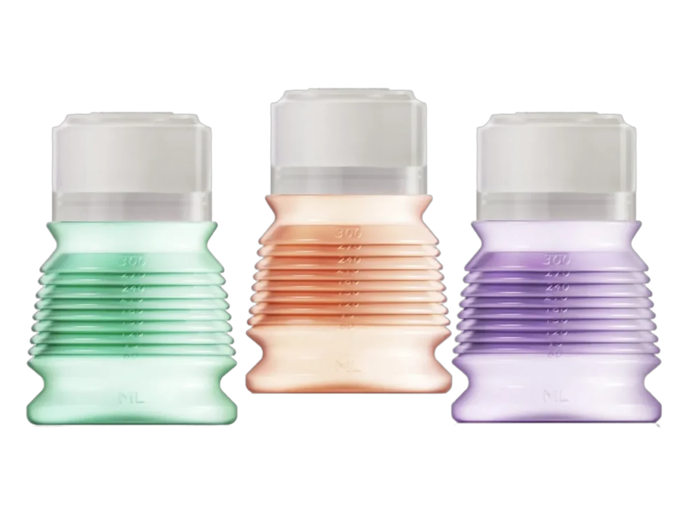
Trois repas dosés la veille : la journée entière tient dans le sac à main, et rien d’autre à emporter.
Menthe, abricot et lilas — un de chaque
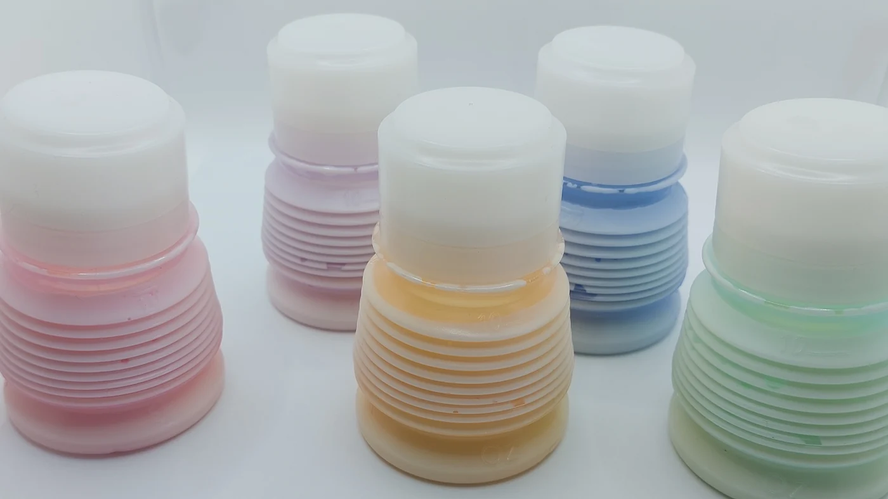
Un chez vous, un dans la voiture, un chez la nounou, un chez mamie — et le cinquième toujours prêt. Ou les cinq déjà dosés pour un long voyage.
La dotation complète · les cinq coloris, un de chaque
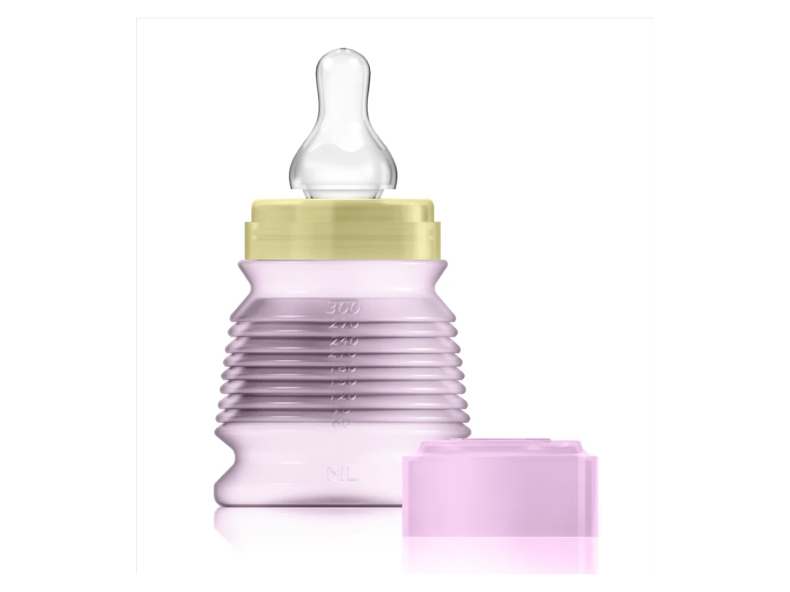
Édition limitée
Coloré de haut en bas, bague jaune. Sur le capuchon, la marque d’origine : un colibri qui tient le O.
Coloris Rose
Le BIBEO ne fait pas partie de l’offre de lancement.
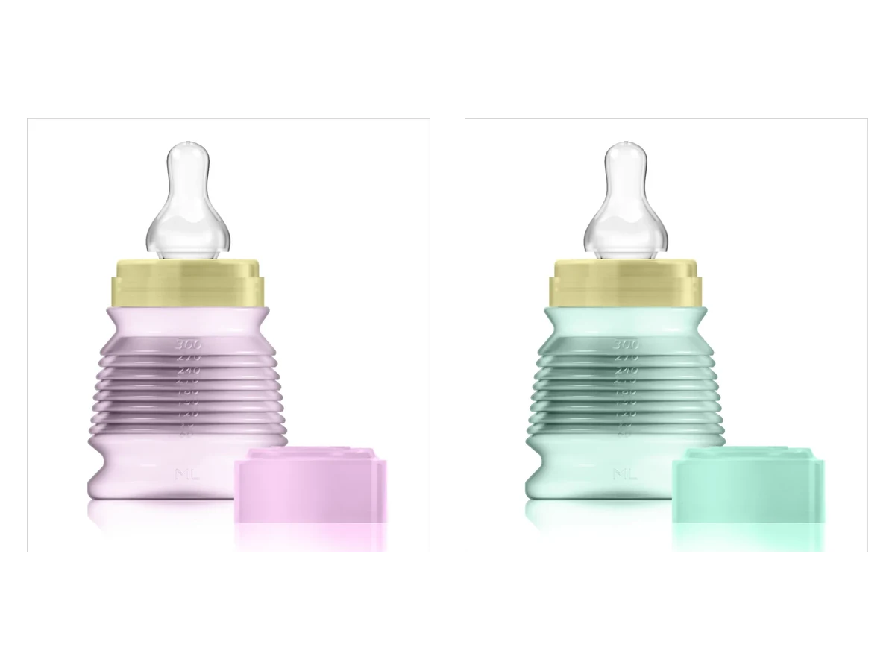
Édition limitée
Un rose et un menthe. La seule façon d’avoir les deux.
Choisissez 2 coloris aucun choisi
Un rose et un menthe
Le BIBEO ne fait pas partie de l’offre de lancement.
Le coloris se choisit avec les pastilles : le bouton vous mène à l’article correspondant. Pour toute demande particulière, indiquez-la dans le message à la commande.
Un biberon par endroit où va bébé.
Et plus rien à emporter entre les deux.
Composition
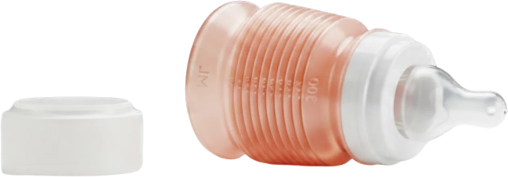
Trois matières, trois procédés, et un poids obtenu au gramme près.
La légèreté a son prix — pourquoi cette composition
Entretien
Réchauffage
Interdit
Stérilisation : pastilles à froid.
Fin de vie
Paiement sécurisé
Prix port compris, expédition depuis la France. Retour sous 14 jours.
Voyager avec bébé
Chaque déplacement a sa contrainte propre : les liquides refusés au contrôle, l’absence de table, le sable, la tablette étroite du train, le sac déjà plein. Aucune ne concerne le biberon lui-même — toutes concernent ce qu’il fallait emporter autour.
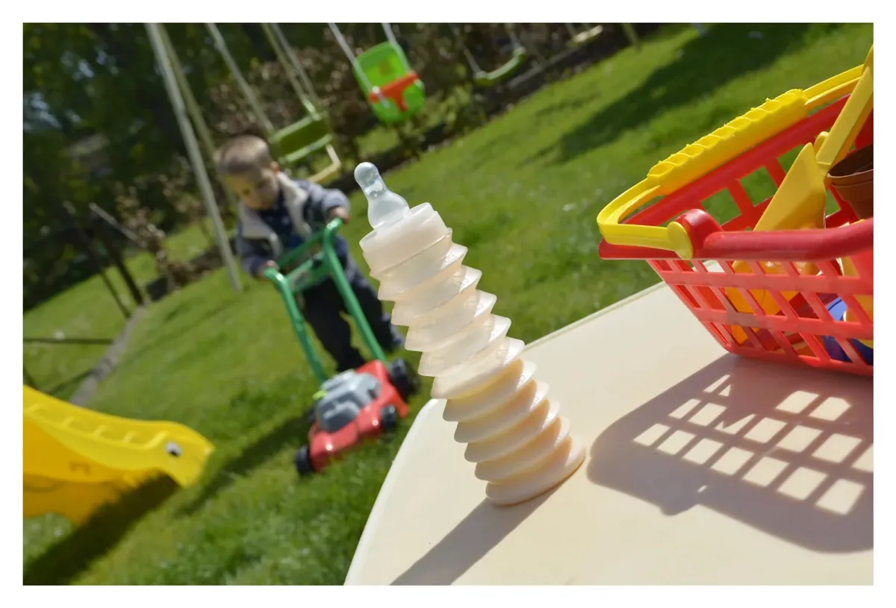
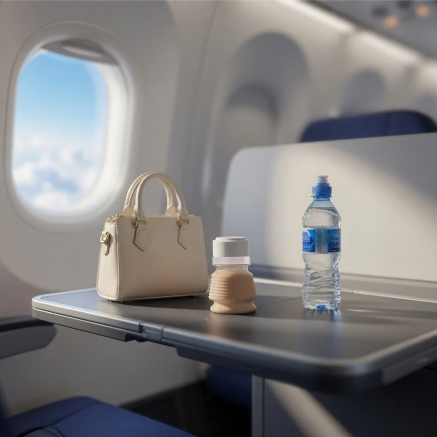
Sur une tablette d’avion, chaque centimètre compte. Avec bébé dans un bras, il faudrait normalement sortir le biberon, la boîte doseuse et l’eau, puis transvaser la poudre au-dessus de ses genoux.
Et encore faut-il avoir tout à portée de main : le grand sac à langer peut être sous le siège, coincé entre les pieds, ou rangé dans le compartiment à bagages au-dessus des sièges. Parfois, il faut se lever pour aller chercher ce dont on a besoin.
Avec BIBEON, la dose est déjà dans le biberon replié. Vous le prenez directement dans votre sac à main, desserrez la bague, dépliez et ajoutez l’eau.
Pas de boîte doseuse à ouvrir. Pas de poudre à transvaser. Pas de grand sac à récupérer. Moins d’objets à sortir et moins de gestes quand bébé a faim.
Plusieurs BIBEON pré-dosés tiennent facilement en cabine. La poudre voyage à sec ; l’eau reste séparée jusqu’au moment du repas.
Trois biberons déjà dosés dans la boîte à gants ou le sac à main. À l’aire d’autoroute, on déplie, on ajoute l’eau, et on repart.
Pas de boîte doseuse à ouvrir sur une tablette étroite. Le dosage est fait depuis la maison, il ne reste qu’un geste à faire.
Le sac de plage est déjà plein. Un biberon replié prend la place d’un tube de crème solaire, et le sable ne rentre pas dans une boîte doseuse restée à la maison.
Peu de place, peu de vaisselle. Le biberon se replie une fois vide et se nettoie au goupillon.
Une sortie d’une heure ne devrait pas exiger un sac à langer complet. Le repas tient dans une poche.
Vous demandez de l’eau, vous dépliez, c’est prêt. Rien à étaler sur la table.
La pause déjeuner à la crèche d’entreprise, le bureau où l’on tire son lait, le sac qui doit rester présentable. Trois biberons dosés la veille tiennent dans une poche latérale.
Vous avez mis votre marque de lait et votre dose avant de partir. La personne qui garde votre enfant n’a rien à mesurer, rien à mémoriser : elle ajoute l’eau jusqu’au trait inscrit sur le capuchon. Plus d’erreur de dosage possible.
Voir tous les usages en voyage
Ce ne sont pas huit situations.
C’est le même geste, partout.
Ce qui revient le plus souvent
C’est la question que se posent la plupart des parents avant d’acheter. Les témoignages vont dans le même sens : des enfants habitués à une seule marque depuis un an l’ont adoptée sans difficulté. La tétine est en silicone alimentaire, à débit 6 mois.
BIBEON se replie à la taille d’un petit pot : replié, il tient dans une poche de sac à main. Vous y placez les doses de lait en poudre avant de partir, vous le dépliez au moment du repas et vous ajoutez l’eau. Plus de boîte doseuse à transporter à côté, et plus de sac à langer à sortir pour une course d’une heure.
Oui. Replié et vide, il prend la place d’un petit étui. Le lait en poudre voyage à sec à l’intérieur et l’eau s’ajoute après les contrôles, ce qui évite la question des liquides en cabine. Les règles applicables aux aliments pour bébé varient selon les aéroports et les compagnies : renseignez-vous avant le départ.
Jusqu’à 8 doses, dans le biberon totalement replié. C’est d’ailleurs la seule bonne position pour doser : la poudre reste à l’abri de l’air.
330 ml une fois entièrement déplié. Le corps est gradué jusqu’à 300 ml par paliers de 30 ml — un soufflet, une graduation. Les 30 ml restants, entre le dernier soufflet et la bague, ne sont pas gradués : 330 ml utiles, 300 ml gradués.
La tétine en silicone fournie est à débit « 6 mois ». BIBEON accompagne les bébés de la diversification jusqu’à environ 3 ans.
Au goupillon, à l’eau chaude savonneuse, puis rinçage. Le lave-vaisselle est interdit. Pour la stérilisation, employez les pastilles de stérilisation à froid. Jamais d’ébullition. Pour réchauffer au bain-marie, au micro-ondes ou au chauffe-biberon, retirez toujours la bague, la tétine et le capuchon.
Le corps, la bague et le capuchon ont fait l’objet d’essais de migration globale au LNE dans des simulants alimentaires : tous les résultats sont inférieurs au seuil analytique de 6 mg/kg indiqué dans le rapport. La tétine est en silicone alimentaire — et non en silicone médical — et relève de sa propre documentation de conformité.
En France, en région lyonnaise, du moule au flacon. La bague et le capuchon sont en matière d’origine végétale.
Ce que les autres ne font pas
Il existe de très bons biberons. Aucun ne réunit ces cinq points.
Le défi
Moins de matière au contact du lait, et une matière qui se plie sans le moindre assouplissant ajouté : c’est ainsi que le laboratoire n’a détecté aucun résidu. La paroi fine n’est pas une économie de plastique, c’est une condition.
Une paroi trop fine cède à la troisième manipulation. Une paroi épaisse ne se plie plus : le biberon redevient ordinaire. Plus épaisse encore, elle devient instable au chauffe-biberon — la forme ne revient pas, et la graduation se déplace. On croit verser 30 ml, il n’y en a que cinq.
Il fallait l’épaisseur exacte où tout tient : assez fine pour que les soufflets travaillent, assez solide pour des centaines de dépliages. Et une géométrie qui contourne l’hystérésis du matériau. Ce fut l’objet d’un brevet.
Ce que vous soupesez n’est pas du plastique en moins.
C’est de la valeur en plus.
01
Dehors, un biberon classique commence souvent par une recherche dans le sac à langer : retrouver le biberon, sortir la boîte doseuse, l’ouvrir, transvaser la poudre, manipuler plusieurs pièces, puis ajouter l’eau.
Avec BIBEON, la dose est déjà dans le biberon replié. Vous le saisissez directement dans votre sac à main, desserrez la bague, dépliez et ajoutez l’eau.
Pas de boîte doseuse à chercher. Pas de poudre à transvaser. Moins d’objets à poser, moins de pièces à manipuler, moins de gestes au moment où bébé a faim.
Le gain n’est donc pas seulement dans le sac. Il est dans tout ce qui disparaît au moment du repas : les recherches, les transvasements, les manipulations — et une partie du stress de ne pas pouvoir reconstituer immédiatement le lait quand bébé pleure.
Replié, BIBEON tient dans une poche et pèse 23 grammes à vide. Trois BIBEON pré-dosés occupent le volume d’un seul biberon rigide vide.
02
La bague et le capuchon sont en matière d’origine végétale. Le flacon est en polypropylène, naturellement sans bisphénol, et il se plie sans assouplissant ajouté. Les essais de migration du LNE ont porté sur les cinq coloris, la bague et le capuchon ; tous les résultats sont inférieurs au seuil analytique de 6 mg/kg indiqué dans le rapport. Lire le détail des mesures.
03
Replié sur la dose de poudre, le biberon ne contient aucun volume d’air : les parois viennent au contact. La tétine repliée voit son orifice obturé par le capuchon.
Rien n’entre, rien ne sort — ni air, ni humidité, ni fuite au fond d’un sac.
04
Dehors, vos doigts ne touchent jamais l’intérieur du biberon. Tout se fait par le capuchon : posé à l’envers, il tient à plat et stable sur n’importe quelle surface — table de restaurant, aire d’autoroute — sans que la bague ni l’intérieur ne rencontrent quoi que ce soit. Et si la tétine s’est enfoncée, on la déloge avec le bord du capuchon, sans y porter la main.
Quand il n’y a ni eau ni savon à portée, le capuchon fait le reste.
05
De 30 à 300 ml, par paliers de 30 — une graduation gravée dans le moule, jamais imprimée : elle ne s’effacera pas au lavage. Aucun autre biberon ne change de contenance : on en achète un de 150 pour les débuts, un de 260 ensuite, un de 330 pour finir. Celui-ci les remplace tous les trois.
Entre leurs mains
Vingt-trois grammes : peu d’effort pour de petits bras. Mais la légèreté ne fait pas tout. Le corps de BIBEON n’est pas lisse : les creux entre les soufflets offrent naturellement une prise où viennent se loger les petits doigts. La main n’a pas besoin d’encercler fortement le biberon pour le retenir. Résultat : il tient bien dans leurs mains et ne leur glisse pas des doigts.


Il n’a rien eu à apprendre.
Il l’a simplement pris.
Ils l’ont eu en main
BIBEON a été soumis aux mères testeuses de ConsoBaby&Kid, premier site français d’avis de parents. Les avis y sont publiés sans que nous puissions les modifier — y compris les critiques que vous lirez plus bas.
Badge ConsoBaby&Kid — attribué aux seuls produits notés au moins 4,2 sur 5, avec un minimum de 30 avis.
sur 65 avis de parents
Nous publions ces retours tels quels, avec leur nombre. Ce sont eux qui guident la suite : le mode d’emploi vidéo de ce site répond aux deux premiers points.
Une belle découverte, dont l’atout principal est la matière. Mon fils d’un an n’était habitué qu’à une seule marque, et il a très bien accepté celui-ci — je crois que la forme y est pour beaucoup. Très pratique, il prend peu de place, et un service client au top.
Très belle découverte avec ce biberon végétal. J’aimais l’idée d’un biberon plus sain et celui-ci m’a vraiment rassurée : les matériaux sont d’origine végétale et sans bisphénols. Il est aussi très léger et facile à manipuler, même pour les petites mains, et il prend très peu de place dans le sac. Bébé semble bien à l’aise avec, et le système aide à limiter l’air dans le biberon.
Excellent biberon d’une grande capacité, qui convient au bébé à partir de six mois. Je recommande vivement, très bon rapport qualité-prix. Facile à nettoyer.
Très contente de ces biberons ! Les matériaux sont de qualité, sans OGM, ce qui est très rassurant pour la santé de bébé. Ils sont faciles à utiliser, à nettoyer, et bébé les accepte très bien. Je recommande sans hésiter.
Avis publiés sur ConsoBaby&Kid, reformulés pour la mise en page. Les textes d’origine sont consultables sur leur site.
Lire les 65 avis sur ConsoBaby&Kid
Nous publions aussi ce qu’ils nous reprochent.
Ce sont eux qui écrivent la suite.
Une question sur le produit, une demande de revendeur, une commande en volume : appelez, on répond.